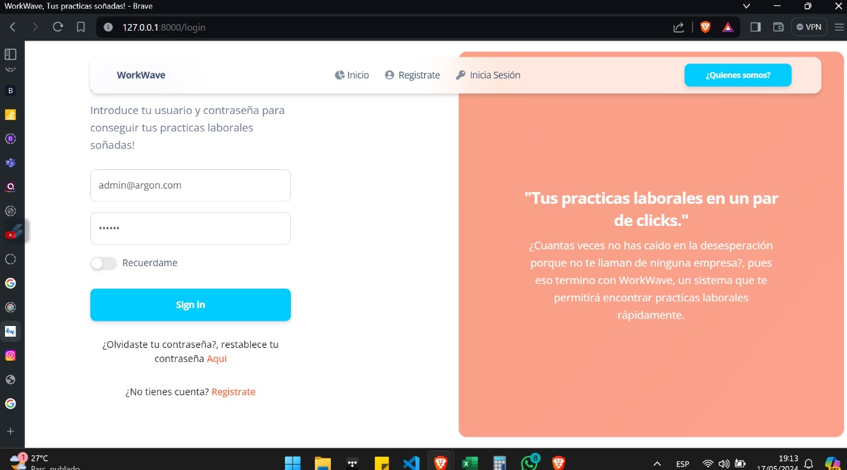
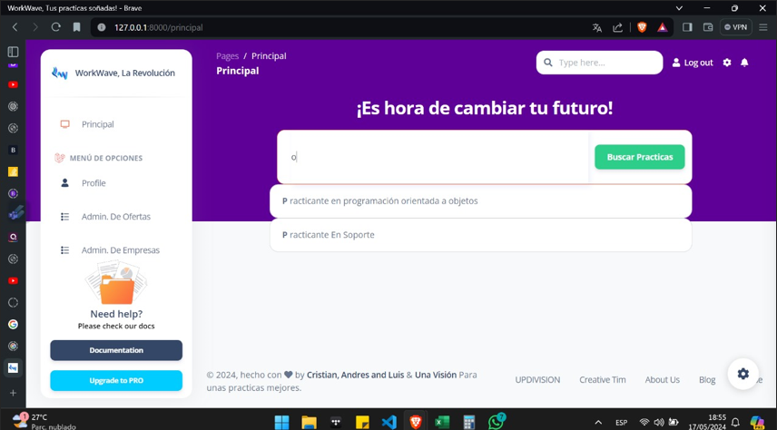

WorkWave's development began in 2023, driven by the need to improve communication between students and companies for internships. In Colombia, the process of finding internships can be challenging for students. Students often struggle to find internships that match their interests and skills, while companies may struggle to find students who are qualified and motivated to do their internships.
To address this challenge, WorkWave was inspired by platforms such as CompuTrabajo and Elempleo.com, two of the most popular platforms in Colombia. These platforms are employment portals that allow users to search and apply for job offers. They have a large database of job offers, making it easier for users to find opportunities that fit their needs.
WorkWave differs from CompuTrabajo and Elempleo.com in that it focuses specifically on finding internships. The platform has a database of internship offers, making it easier for students to find opportunities that match their interests and skills. In addition, the platform has specific features for students and companies, such as the ability to create personalized profiles and perform advanced searches..
By: Cristian, Andres & Luis